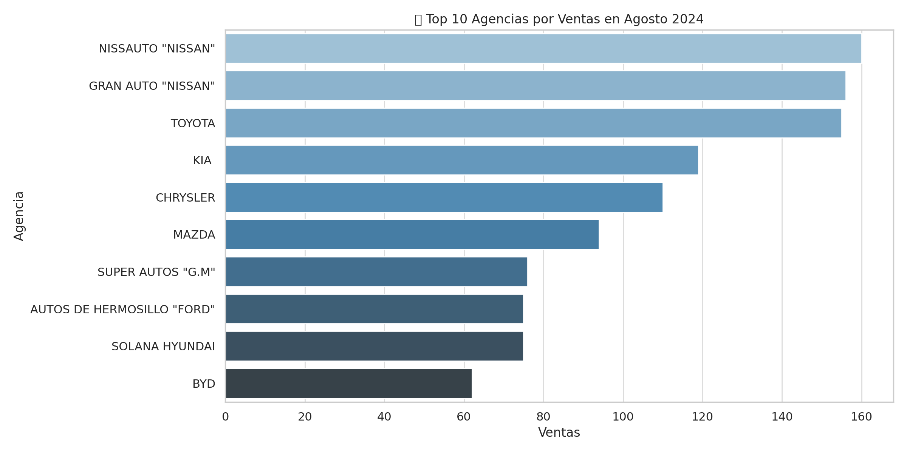
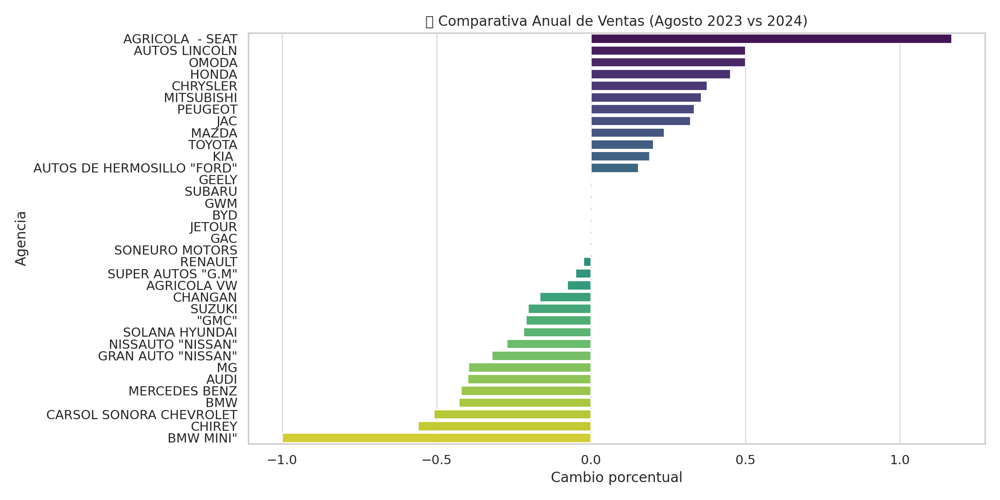
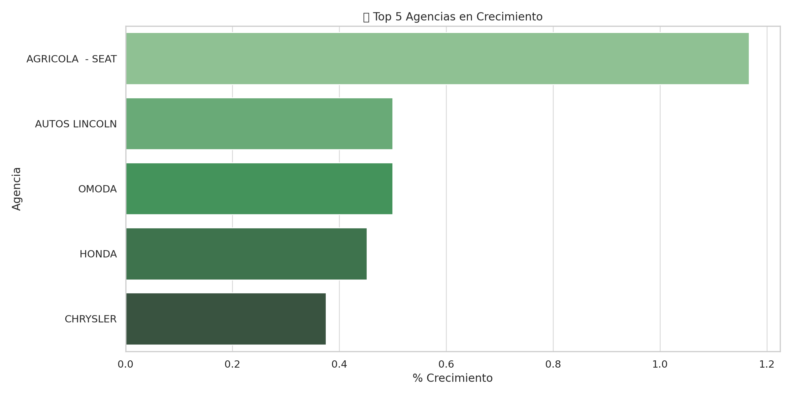
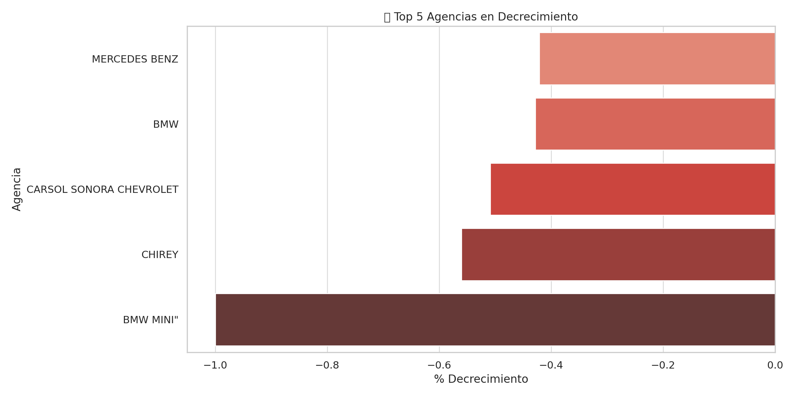
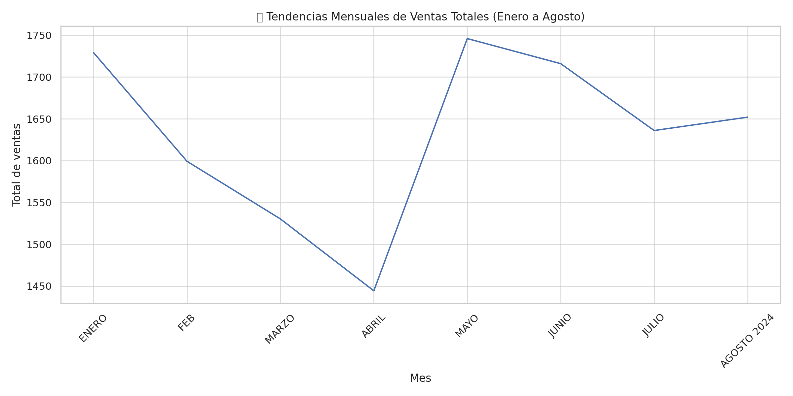

Fecha del Reporte: 11 de abril de 2024
Este análisis visualiza las ventas mensuales de agencias automotrices en Hermosillo, Sonora, con foco en los datos del sondeo realizado por AMDA. Se exploran tendencias, comparativas interanuales y se identifican líderes en crecimiento y caída de ventas.
Se destacan las agencias con mayores ventas reportadas en agosto de 2024.

Las agencias Nissauto "Nissan" y Gran Auto "Nissan" lideran el ranking con más de 150 unidades vendidas, mostrando una fuerte dominancia del grupo Nissan en la región.
Porcentaje de cambio interanual por agencia.

Algunas agencias presentan decrecimientos significativos respecto a 2023, mientras que otras han logrado un crecimiento notable. Este gráfico nos ayuda a detectar oportunidades de mejora y reconocer buenas prácticas comerciales.
Agencias con mayor porcentaje de crecimiento respecto a agosto del año anterior.

Agrícola - SEAT destaca con un impresionante crecimiento de más del 100%, indicando una reactivación o mejora estratégica significativa en su operación comercial.
Agencias con mayores caídas interanuales en ventas.

Agencias como BMW MINI y Chirey presentan caídas abruptas, lo cual puede atribuirse a factores de mercado, inventario o estrategias comerciales deficientes.
Acumulado mensual de ventas de todas las agencias.

Se observa una baja sostenida de enero a abril, seguida de una fuerte recuperación en mayo. Este patrón puede estar relacionado con campañas estacionales, lanzamientos o incentivos comerciales.